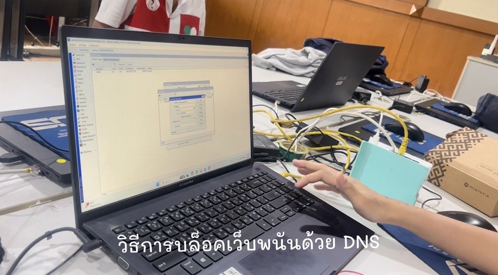
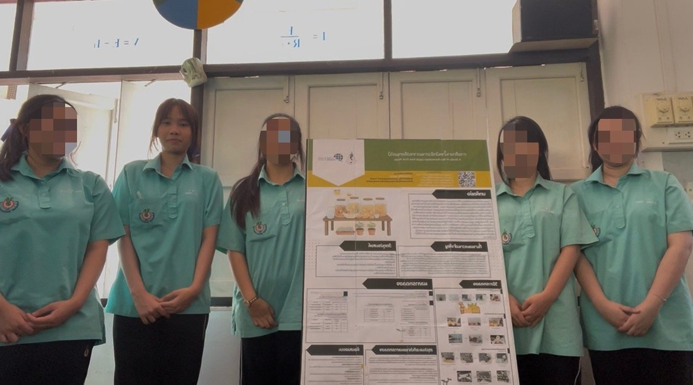

🌐 โครงงานที่ 1 : การบล็อกเว็บไซต์พนันด้วยอินเทอร์เน็ต โครงงานการบล็อกเว็บไซต์พนันด้วยอินเทอร์เน็ต เป็นโครงงานที่จัดทำขึ้นเพื่อศึกษาแนวทางการป้องกันและลดการเข้าถึงเว็บไซต์พนันออนไลน์ ซึ่งเป็นปัญหาที่สามารถส่งผลกระทบต่อเยาวชนและสังคม โดยได้นำความรู้ด้านเทคโนโลยีและการทำงานของระบบเครือข่ายอินเทอร์เน็ตมาประยุกต์ใช้ในการพัฒนาแนวทางสำหรับบล็อกเว็บไซต์ที่ไม่เหมาะสม จากการทำโครงงานครั้งนี้ ทำให้ได้เรียนรู้เกี่ยวกับระบบเครือข่าย การทำงานของอินเทอร์เน็ต รวมถึงการแก้ไขปัญหาและการทำงานร่วมกับผู้อื่น นอกจากนี้ยังได้ฝึกทักษะการนำเสนอและการคิดอย่างเป็นระบบ ซึ่งเป็นประสบการณ์ที่สามารถนำไปต่อยอดในการเรียนด้านคอมพิวเตอร์และเทคโนโลยีในอนาคตได้ 🏆 รางวัลที่ได้รับ : รองชนะเลิศอันดับ 2

🌱 โครงงานที่ 2 : น้ำหมักชีวภาพจากเปลือกผลไม้ โครงงานน้ำหมักชีวภาพจากเปลือกผลไม้ เป็นโครงงานที่จัดทำขึ้นเพื่อนำเปลือกผลไม้ที่เหลือจากการบริโภคมาใช้ให้เกิดประโยชน์ โดยนำมาผ่านกระบวนการหมักเพื่อผลิตเป็นน้ำหมักชีวภาพ ซึ่งเป็นแนวทางในการลดปริมาณขยะอินทรีย์และเพิ่มมูลค่าให้กับวัสดุเหลือใช้ในชีวิตประจำวัน จากการทำโครงงานนี้ ทำให้ได้เรียนรู้กระบวนการทำงานอย่างเป็นขั้นตอน ตั้งแต่การวางแผน การทดลอง การสังเกตผล และการแก้ไขปัญหาที่เกิดขึ้นระหว่างการทำงาน นอกจากนี้ยังได้ฝึกทักษะการทำงานร่วมกับผู้อื่นและการนำเสนอผลงาน โครงงานนี้ได้รับ การคัดเลือกให้เป็นตัวแทนของโรงเรียนบ้านบึงอุตสาหกรรมนุเคราะห์ เพื่อไปนำเสนอและพูดเกี่ยวกับโครงงานในกิจกรรมวันเปิดบ้านของโรงเรียน ซึ่งเป็นประสบการณ์ที่ช่วยเพิ่มความมั่นใจในการสื่อสารและการนำเสนอผลงานต่อผู้อื่นค่ะ 💜